Summarize, assignment (Jupyter notebook), labs (Jupyter Notebook) from the Coursera's AI for Medical Course.
Example 1 In Dermatology: Using the CovNet to determine whether the region of skin tissue is cancer or not. Based on the following paper, the prediction from the model is as good as the prediction from the dermatologist. Reference: Dermatologist-level classification of skin cancer with deep neural networks

Example 2 Ophthalmology (Eye Disease): Given the Retinal Fundus Photos of an eyes, the model can be used to identify whether the patient has Diabetic Retinopathy, i.e. the damage cause by the diabetes which can lead blindness. Reference: Fundus photograph-based deep learning algorithms in detecting diabetic retinopathy

Eg 3 Histopathology (Cancer Diagnosis): Given a whole-slide image (microscopic tissue scan), determine whether the cancer has spread. Usually that the whole-slide images is very large, several patches are extracted and used to train the model, this is known as Data Augmentation techniques. Reference: Impact of Deep Learning Assistance on the Histopathologic Review of Lymph Nodes for Metastatic Breast Cancer.

Objective: we want to build and train a model to detect the pneumonia, lung cancer, and other disease from the Chest X-ray. (Multi-Task Classification problem)
Example: Given an X-ray image, identify if there is a mass? (In medical field, a Mass is a lesion that is greater 3 cm. in diameter.)

Imbalance problem is a very common problem in medical field. We usually have less sample from the anomaly/defect class. For example, the eye disease dataset, there are 30% of Diabetic Retinopathy and 70% of Non Diabetic Retinopathy. This yields a model that starts to predict a low probability of disease for everybody, if we are using the generic binary loss.

Consider the binary Cross-entropy loss,
Impact of Class Imbalance on Loss Calculation: we can see in the figure below that most of the contribution of the loss come from the normal class so the model will try to get the normal class right.

Solution 1: Weighted Loss - modifying the loss function to make every classes have the same amount of contribution.


Solution 2: Resampling (Over-sampling / Under-sampling) the data such that we have the same number of observation for each class. Then, we can use standard binary cross-entropy loss.
Have model that can perform multiple task i.e. "Mass vs No-Mass", Pneumonia vs No-Pneumonia", "Edema vs No-Edema". The benefit of multi-task model is that each task might share information that could enable the model to generalize better on each original task.
Assume we have 3 classification tasks, the output is a 3-dimensional vector. We are using the Weighted Multi-Label loss which is just the sum of the all individual loss. Note that, the weight of each loss are different for different label.
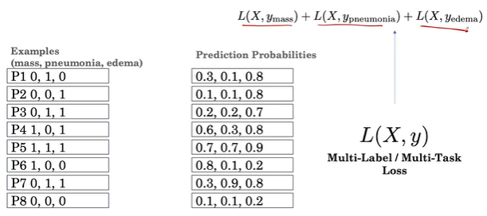 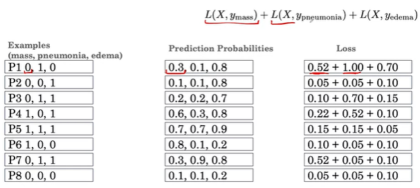 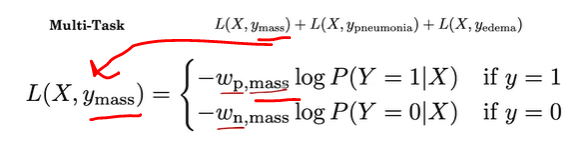
Addition resource on Multi-Task Learning: An Overview of Multi-Task Learning in Deep Neural Networks (2017)
Medical image datasets typically have 10,000 to 100,000 examples.
CNN is one of the most common method to analyze the medical Imaging problem, such as 2D X-ray, CT Scan, and medical Signal processing, but it is very data hungry. There are many CNN architecture. The standard procedure is to try them all and see which one works best.

Solution 1: Transfer Learning Since we don't have a lot of data, we use pre-trained network and fine-tune it. The pre-trained network will learn the general feature that will help its learning on the medical task i.e. the feature that defines edges on penguin might be helpful for identify edges on the lung. There are 2 options in fine tuning: Fine tune all the layer and don't fine tune all the features (freeze the features learned by the shallow network and just fine tune the deeper layer).
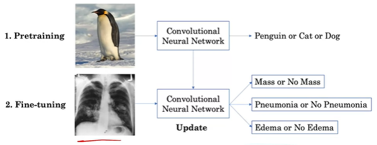

Solution 2: Data Augmentation: rotating / translating side way / zooming in / changing the brightness and contrast / adding the color noise
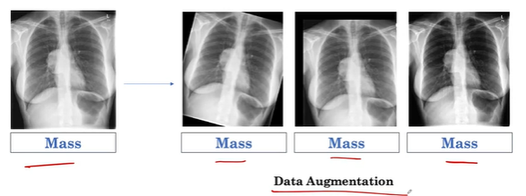 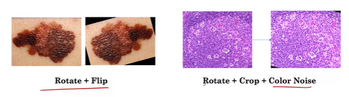
In practice, 2 questions that drive the choice of the transformation:
Splitting the data (in this order) into testing set, validation set, and training set. The cross-validation is used to reduce the variability in the estimate of the model's performance. To prevent the model being overly-optimistic, the data must be split in such a way that they are all independent. For this example, a patient can have multiple scan. We must ensure that there is no patient overlap between these split.


Minority Sampling: given that our data is imbalance, we might want to set a threshold number to ensure that the test set has at least X% of minority class (sometimes we set it to be 50%).
We can use Consensus Voting i.e. the majority voting to help settle the disagreement.

We can also use additional medical testing, e.g. using CT scan to confirm whether there is a mass in the chest x-ray.

Accuracy Metric:
Relationship between Accuracy, Sensitivity, Specificity, and Prevalence
We can define the accuracy in term of conditional probability: By interpreting the accuracy as the probability of being correct, i.e.

We can view the accuracy as the weighted average of sensitivity and specificity.
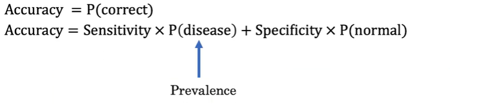

Example: (negative = normal)
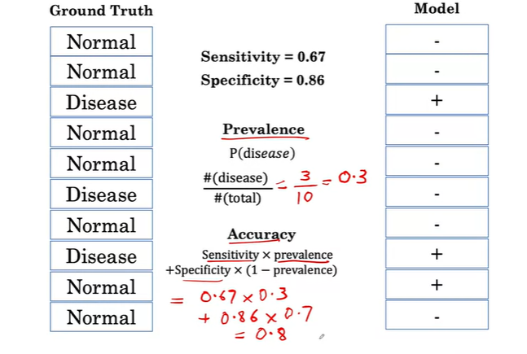
Example:
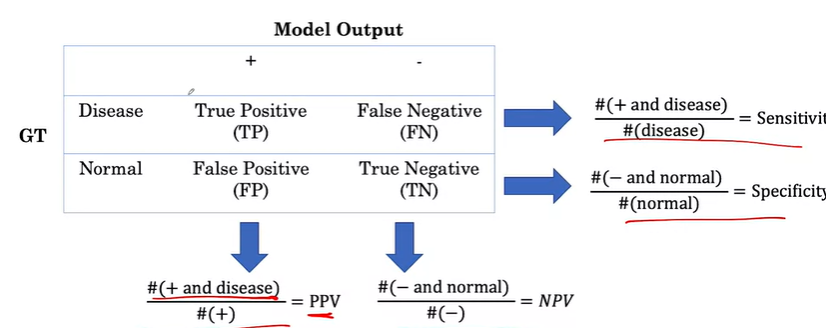


Treat each of the sequence as separate channels. There could be more or less than 3 sequences.

Image Registration technique can be used to ensure that the image are aligned with each others when all the channels are combined.
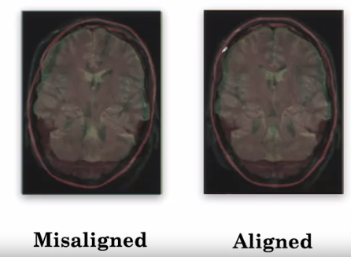
Combining multiple channels for all slices

2D Approach: we break up the 3D slices into multiple 2D slices. Each slides are passed through the segmentation and the result from each 2D slides are combined at the end. However, we might lose some information, i.e. cancer tissue usually covered by multiple 2D slides.
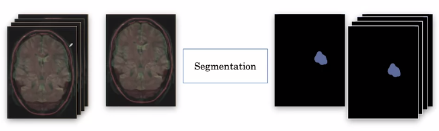
3D Approach: It is impossible to pass the whole 3D sequences (not feasible). Instead, we break the whole 3D sequence into smaller 3D sub-volume then each of them is fed to the model (one at a time). This approach we lose the temporal context, i.e. if there is a cancer in a sub-volume, it is likely to be cancer around this sub-volume as well.
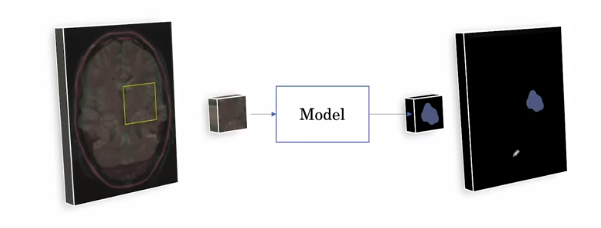
U-Net is one of the most popular Segmentation Architecture. It can achieve good result even with 100 samples. It consists of 2 parts:
For 2D approach, the network is trained on the input/output pair of 2D slice. However, you could lose come context between slices.
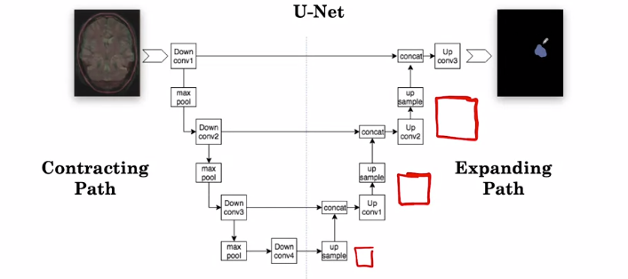
For 3D approach, just replace all the 2D layers with 3D, i.e. 2D Conv => 3D Conv, 2D pooling layer => 3D pooling layer. The input is a 3D sub-volume.

Additional Information:
For a brief video introduction to U-Net by the original creators, Olaf Ronneberger, Philipp Fischer, Thomas Brox, please visit their site U-Net: Convolutional Networks for Biomedical Image Segmentation.
More detail from the blog post by Heet Sankesara UNet.
To go deeper, you can read the original research paper U-Net: Convolutional Networks for Biomedical Image Segmentation by Olaf Ronneberger, Philipp Fischer, Thomas Brox
Unlike the data augmentation in 2D, in segmentation, the transformation need to apply to both input and output and it need to be apply on 3D.

Example (in 2D),
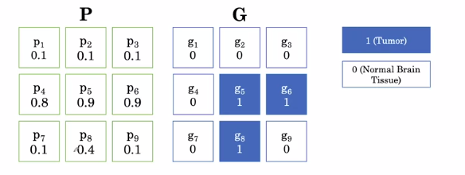
Soft Dice Loss: it is very popular loss function for segmentation model and working well in the presence of the imbalance data which is usually the case for the segmentation problem, i.e. only a small fraction is a tumor region.
Generalization is hard.
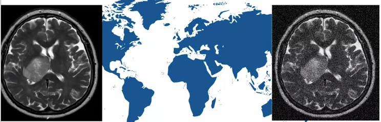
External Validation: testing the model on the test sample from the new population. Note that the internal validation is drawn from the same population as the training and validation set.
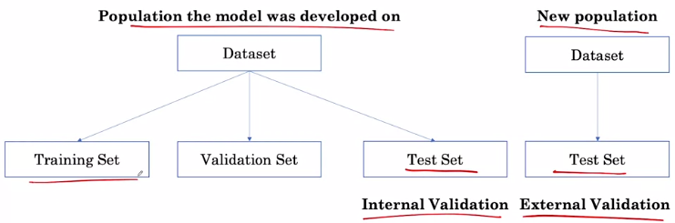
To overcome the generalization problem, we can fine-tune the model using a fraction of data from the new population.
In the model development perspective, we can look at the AUROC (classification) and Dice score (Soft Dice Loss for Segmentation). However, in real world (deployment), we want to see how effective the model is on the real patient. Decision Curve Analysis or Randomized Controlled Trials can be used to measure whether the model actually help improve the patient's health outcomes.
Bias Model? In the real world, we would want to analyze the effect of the model not just overall, but also on subgroups of the population. This would include patients of different ages, sex, and socioeconomic status.
For this assignment, we will be using the ChestX-ray8 dataset which contains 108,948 frontal-view X-ray images of 32,717 unique patients.
The assignment will walk through some of the steps of building and evaluating this deep learning classifier model. In particular, you will:
Checking Data Leakage.
df1_patients_unique = set(df1[patient_col].unique())
df2_patients_unique = set(df2[patient_col].unique())
patients_in_both_groups = df1_patients_unique.intersection(df2_patients_unique)
Pre-processing the image:
ImageDataGenerator: Generate batches of tensor image data with real-time data augmentation.Loss function (Imbalance class)
The cross-entropy loss contribution from the
Note that for any training case, either
We can rewrite the overall average cross-entropy loss over the entire training set
Weighted Loss
where
DenseNet121: Using pre-trained DenseNet121
# create the base pre-trained model
base_model = DenseNet121(weights='./nih/densenet.hdf5', include_top=False)
x = base_model.output
# add a global spatial average pooling layer
x = GlobalAveragePooling2D()(x)
# and a logistic layer
predictions = Dense(len(labels), activation="sigmoid")(x)
model = Model(inputs=base_model.input, outputs=predictions)
model.compile(optimizer='adam', loss=get_weighted_loss(pos_weights, neg_weights))
Fit the model
history = model.fit_generator(train_generator,
validation_data=valid_generator,
steps_per_epoch=100,
validation_steps=25,
epochs = 3)
plt.plot(history.history['loss'])
plt.ylabel("loss")
plt.xlabel("epoch")
plt.title("Training Loss Curve")
plt.show()
The model architecture for our pre-trained model is exactly the same, but we used a few useful Keras callbacks for this training. You can read about these callbacks and other useful Keras callbacks here. They are very useful for managing long-running training sessions:
ModelCheckpoint callback to monitor your model's val_loss metric and keep a snapshot of your model at the point.TensorBoard to use the Tensorflow Tensorboard utility to monitor your runs in real-time.ReduceLROnPlateau to slowly decay the learning rate for your model as it stops getting better on a metric such as val_loss to fine-tune the model in the final steps of training.EarlyStopping callback to stop the training job when your model stops getting better in it's validation loss. You can set a patience value which is the number of epochs the model does not improve after which the training is terminated. This callback can also conveniently restore the weights for the best metric at the end of training to your model.A GradCAM's technique to produce a heatmap highlighting the important regions in the image for predicting the pathological condition. This is done by extracting the gradients of each predicted class, flowing into our model's final convolutional layer.
It is worth mentioning that GradCAM does not provide a full explanation of the reasoning for each classification probability. However, it is still a useful tool for "debugging" our model and augmenting our prediction so that an expert could validate that a prediction is indeed due to the model focusing on the right regions of the image.
import cv2
from keras import backend as K
from tensorflow.compat.v1.logging import INFO, set_verbosity
def grad_cam(input_model, image, cls, layer_name, H=320, W=320):
"""GradCAM method for visualizing input saliency."""
y_c = input_model.output[0, cls]
conv_output = input_model.get_layer(layer_name).output
grads = K.gradients(y_c, conv_output)[0]
gradient_function = K.function([input_model.input], [conv_output, grads])
output, grads_val = gradient_function([image])
output, grads_val = output[0, :], grads_val[0, :, :, :]
weights = np.mean(grads_val, axis=(0, 1))
cam = np.dot(output, weights)
# Process CAM
cam = cv2.resize(cam, (W, H), cv2.INTER_LINEAR)
cam = np.maximum(cam, 0)
cam = cam / cam.max()
return cam
 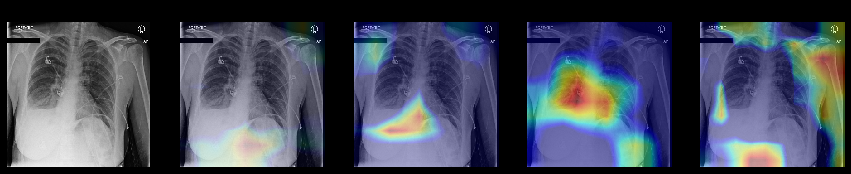
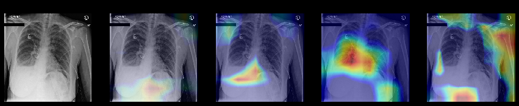
Topics: Accuracy, Prevalence, Specificity, Sensitivity, PPV & NPV, ROC, AUCROC, and confidence interval using the imbalance sample as an example.
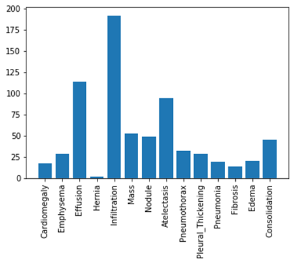
These metrics will depend on the choice of threshold, thresholded_preds = pred >= threshold
TP = np.sum((y == 1) & (thresholded_preds == 1))FP = np.sum((y == 0) & (thresholded_preds == 1))TN = np.sum((y == 0) & (thresholded_preds == 0))FN = np.sum((y == 1) & (thresholded_preds == 0))The proportion of positive examples.
They are used to evaluate how well the model predicts positives for patients with the condition and negatives for cases that actually do not have the condition.
Positive predictive value (PPV) is the probability that subjects with a positive screening test truly have the disease.
Negative predictive value (NPV) is the probability that subjects with a negative screening test truly don't have the disease.
The Receiver Operating Characteristic (ROC) curve is created by plotting the true positive rate (TPR) against the false positive rate (FPR) at various threshold settings. The ideal point is at the top left, with a true positive rate of 1 and a false positive rate of 0.
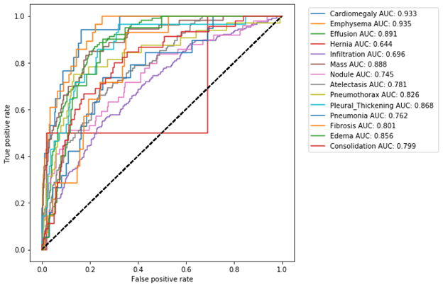
The bootstrap (stratified random sampling) method is used to estimates the uncertainty by resampling the dataset with replacement.
Precision-Recall is a useful measure of success of prediction when the classes are very imbalanced.
Precision is a measure of result relevancy and that is equivalent to our previously defined PPV.
Recall is a measure of how many truly relevant results are returned and that is equivalent to our previously defined sensitivity measure.
The precision-recall curve (PRC) shows the trade-off between precision and recall for different thresholds. A high area under the curve represents both high recall and high precision, where high precision relates to a low false positive rate, and high recall relates to a low false negative rate.
High scores for both show that the classifier is returning accurate results (high precision), as well as returning a majority of all positive results (high recall).
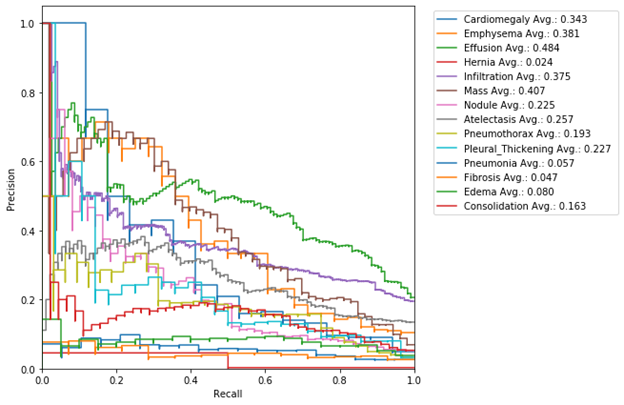
F1 score is the harmonic mean of the precision and recall, where an F1 score reaches its best value at 1 (perfect precision and recall) and worst at 0.
When performing classification we often want not only to predict the class label, but also obtain a probability of each label. This probability would ideally give us some kind of confidence on the prediction. In order to observe how our model's generated probabilities are aligned with the real probabilities, we can plot what's called a calibration curve.
In order to generate a calibration plot, we first bucketize our predictions to a fixed number of separate bins (e.g. 5) between 0 and 1. We then calculate a point for each bin: the x-value for each point is the mean for the probability that our model has assigned to these points and the y-value for each point fraction of true positives in that bin. We then plot these points in a linear plot. A well-calibrated model has a calibration curve that almost aligns with the y=x line.
The sklearn library has a utility calibration_curve for generating a calibration plot. Let's use it and take a look at our model's calibration:

Input data: an image file containing a 4D array of MRI in the shape of (240, 240, 155, 4). The fourth dimension is the value for 4 different sequences:

Label data: a 3D array with the shape of (240, 240, 155). The integer values in this array indicate the "label" for each voxel in the corresponding image files:
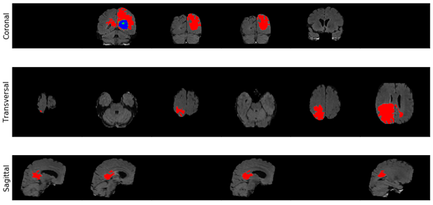
df.info()print(f"The total patient ids are {df.PatientId.count()}, from those the unique ids are {df.PatientId.nunique()} ")# Extract numpy values from Image column in data frame
# array(['00008270_015.png',..., '00017951_001.png'], dtype=object)
images = train_df['Image'].values
# Extract 9 random images from it
random_images = [np.random.choice(images) for i in range(9)]
img_dir = 'nih/images-small/'
plt.figure(figsize=(20,10))
# Iterate and plot random images
for i in range(9):
plt.subplot(3, 3, i + 1)
img = plt.imread(os.path.join(img_dir, random_images[i]))
plt.imshow(img, cmap='gray')
plt.axis('off')
# Adjust subplot parameters to give specified padding
plt.tight_layout()
ImageDataGenerator function. Each image will have the mean value of the pixel of 0 and the standard deviation of 1, i.e. # Normalize images
image_generator = ImageDataGenerator(
samplewise_center=True, #Set each sample mean to 0.
samplewise_std_normalization= True # Divide each input by its standard deviation
)

Densenet: it is a covnet where each layer is connected to all other layers that are deeper in the network. The first layer is connected to the 2nd, 3rd, 4th etc. The second layer is connected to the 3rd, 4th, 5th etc.

Using the pretrained densenet model via Keras:
# Import Densenet from Keras
from keras.applications.densenet import DenseNet121
from keras.layers import Dense, GlobalAveragePooling2D
from keras.models import Model
from keras import backend as K
# Create the base pre-trained model
base_model = DenseNet121(weights='./nih/densenet.hdf5', include_top=False);
# Define a set of five class labels
labels = ['Emphysema', 'Hernia', 'Mass', 'Pneumonia', 'Edema']
n_classes = len(labels)
# Add a logistic layer with the same size as the number of classes that we're trying to predict
x = base_model.output
x_pool = GlobalAveragePooling2D()(x)
predictions = Dense(n_classes, activation="sigmoid")(x_pool)
model = Model(inputs=base_model.input, outputs=predictions)
model.compile(optimizer='adam', loss='categorical_crossentropy')
# Create a "set" datastructure of the data set id's to identify unique id's
ids_train_set = set(train_df.PatientId.values)
ids_valid_set = set(valid_df.PatientId.values)
# Identify patient overlap by looking at the intersection between the sets
patient_overlap = list(ids_train_set.intersection(ids_valid_set))
n_overlap = len(patient_overlap)
# Get the index of overlapping patient
train_overlap_idxs = []
valid_overlap_idxs = []
for idx in range(n_overlap):
train_overlap_idxs.extend(train_df.index[train_df['PatientId'] == patient_overlap[idx]].tolist())
valid_overlap_idxs.extend(valid_df.index[valid_df['PatientId'] == patient_overlap[idx]].tolist())
# Drop the overlapping rows from the validation set
valid_df.drop(valid_overlap_idxs, inplace=True)
Exploring the Layer of Brain MRI via IPython Widget. Each sample is a 3D volume. It has multiple layers (slice), where each slice is a 2D image.
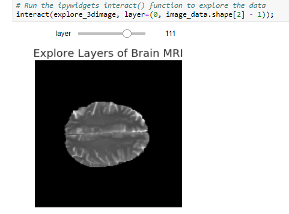
Visualize the labels for a specific layer:
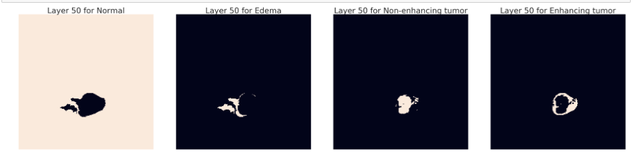
Training on a full MRI scan would be too memory intensive to be practical, so we need to extract sub-sections of the MRI data to train the network.